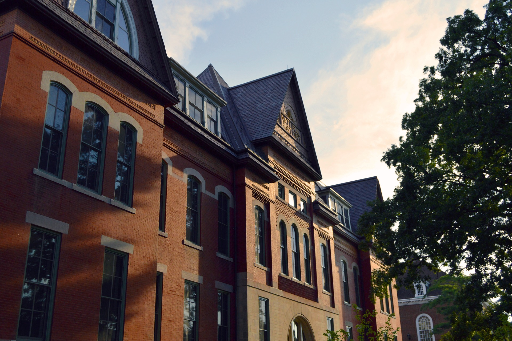

我们的故事
二零一六年玖月，我们踏进了这片校园。我提着行李，走在鸣飞湖畔。

当我来到这个学校的时候，还是一个懵懂的孩子，
对这里的一切都是那样的好奇而新鲜;
如今四年转瞬离去，已经长成一个青年，对现实与未来也有了一些自己的认识和看法;
在即将结束这段人生历程的时候，回想我大学生活，可谓是一幅多彩、别致的图画，
大学四年，不仅使我学习到了专业知识，
为以后的走向社会，开始工作做了准备，同时又教会我如何才能成为对社会有用的人才，
使我形成了正确的人生观、价值观，在我今后的人生道上
大学生活学习的经历会对我受益非浅。